基于神经网络图嵌入的跨平台二进制代码相似性检测
作者： Xiaojun Xu, …, 宋乐， 宋晓东
摘要
跨平台二进制代码相似性检测的关键在于：检测二进制函数是否相似，它具有很多安全应用场景。例如，代码剽窃检测，恶意软件识别，搜索漏洞。现有方法依赖于近似图匹配算法，这种算法不可避免地速度慢，有时不准确，并且难以适应新任务。为了解决这些问题，在这项工作中，我们提出了一种基于神经网络计算嵌入层的新颖方法，即为每个二进制函数的控制流图计算数值向量，然后可以通过测量两个二进制函数的嵌入层距离来检测函数的相似性。我们实现了一个名为Gemini的原型。经过广泛评估，Gemini在相似度检测准确性方面大大优于最新技术。此外，Gemini可以将现有嵌入生成技术的时间缩短3到4个数量级，并将所需的训练时间从1周以上减少到30分钟至10小时。我们在实际的案例研究中表明，与Genius相比，Gemini可以识别出更多的脆弱固件镜像。我们的研究展示了深度学习在计算机安全问题上的成功应用。
1 引言
给定两个二进制函数，我们想检测它们是否相似。 这个问题被称为“二进制代码相似性检测”，它在安全方面具有许多的应用场景，例如代码剽窃检测，恶意软件检测，漏洞搜索等。在这些场景中，物联网设备固件镜像中的漏洞搜索尤为重要，该问题比以往任何时候更加严峻。 源代码级别的单个错误可能会散布在数百个或更多具有不同硬件体系结构和软件平台的设备上。 崔等人[12]的研究表明，市场上80.4％发行的固件具有多个已知漏洞，并且许多最近发布的固件更新都包含第三方库中的漏洞，这些漏洞已经存在了八年之久。
安全从业人员越来越需要在多个平台（例如x86，ARM或MIPS）的二进制文件中快速直接地检测函数相似性。直到最近，研究人员才开始解决跨平台二进制代码相似性检测的问题[16、18、31]。这些工作提出直接从二进制代码中提取函数CFG中各节点的特征（足够鲁棒性的平台无关性特征）用来表征一个函数。然后，为了进行二进制代码相似性检测，使用图匹配算法来检查两个函数的CFG是否相似[16，31]。另一方面，Genius [18]从CFG中提取高级特征表征函数，并计算CFG的嵌入（即高维数值向量）。但是，要计算二进制函数的嵌入，它还依赖于图匹配算法来计算目标函数和二进制函数码本之间的相似度。
不幸的是，这种基于图匹配的方法具有两个不可避免的缺点。 首先，通过固定图匹配算法计算出的近似相似度函数很难适应不同的应用场景。 例如，在代码抄袭检测的场景中，给定两个仅在少数几个指令中有所不同的二进制代码，由于大多数代码是相同的，因此可以将它们视为相似。 但是在漏洞搜索的场景中，它们可能被认为是不同的，因为几个指令的差异可能会修复一个重要的漏洞。 人工设计的函数相似度检测本质上无法同时适用于两种情况。
其次，所有基于图匹配的相似性检测方法的效率都受到图匹配算法（例如二分图匹配）效率的限制。 但是，图形匹配算法很慢，即要求图形大小具有超线性运行时间。 因此，这种方法不可避免地效率低下。
近年来，深度学习[28]已应用于许多领域，包括二进制分析[42]，并且已显示出比其他方法更好的效果。 深度神经网络的优势在于，它们可以表示一个二进制分析任务，例如，为二进制函数生成一个嵌入，作为一个神经网络，其参数可以端到端地进行训练，因此它仅依赖于很少的领域知识（ 例如，先前方法中的图形匹配）。 此外，由于可以用不同的数据训练神经网络以适合不同的应用场景或任务，因此可以将基于深度神经网络的方法设计为自适应。 而且，可以有效地计算深度神经网络模型，即，运行时间与输入大小、网络大小呈线性关系。
受这些优点的启发，在这项工作中，我们提出了一种基于深度神经网络的方法来生成用于相似性检测的二进制函数的嵌入。特别是，假设二进制函数表示为一个控制流图（每个节点都有其附加的属性），则我们使用图嵌入网络将图转换为嵌入。以前，已经有人提出了图嵌入网络应用于一些领域（例如分子分类[13]）中的分类和回归任务。但是，我们的工作是相似性检测，这与分类不同，因此它们的方法不能直接应用于我们的任务。取而代之的是， 我们提出了一种通过融合图嵌入网络和Siamese网络[7]来计算嵌入以进行相似度检测的新方法，该方法自然地抓住了两个相似函数的嵌入应该彼此接近的目的，反之亦然。然后可以对整个网络模型进行端到端训练，以进行相似性检测。
此外，我们使用默认策略设计了一种新的训练和数据集创建方法，以预先训练与任务无关的图形嵌入网络。 我们的方法 使用从相同源代码编译（但不同平台和编译器优化级别）的二进制函数构造大规模训练数据集。 我们的评估表明，与最新的基于图匹配的方法相比，这种与任务无关的模型更有效，并且可以更好地推广到未训练的函数[18]。
基于神经网络方法的一个优势是，可以在存在额外监督的情况下快速重新训练预训练模型，以适应新的应用场景。 我们的评估表明，在这种额外的监督下，重新训练的模型可以有效地适应新任务。 与以前的方法（例如Genius）不同，Genius需要花费一个多星期的时间来重新训练模型，而训练一个神经网络效率很高，并且每个再训练阶段都可以在30分钟内完成。 该效率特性使再训练在实际应用中成为可能，以提高相似性检测的性能。
我们已经实现了一个名为Gemini的原型。 我们的评估表明，在准确性和效率方面，Gemini都比Genius [18]等最先进的方法优越。 为了得到准确结果，我们将Gemini和Genius应用于相同任务：评估独立任务模型和特定任务模型。 对于前者，我们的预训练任务中独立模型的AUC（曲线下面积）为0.971，而Genius的AUC为0.913。 对于后者，从真实数据集中，我们的特定任务模型可以在前50个结果中比Genius平均多识别出25个脆弱固件镜像。 注意，以前的方法不能灵活地合并特定任务的有效监督。 因此，与以前的工作相比，再训练过程是我们方法的独特优势。
为了提高效率，在嵌入生成时间和训练时间方面，Gemini比Genius更有效率。 对于嵌入生成，Gemini比Genius方法快2400倍至16000倍。 对于训练时间，训练有效的Gemini模型所需的时间少于30分钟，而训练Genius所需的时间则超过一周。
在更广泛的范围内，这项工作展示了如何应用深度学习解决重要的和正在出现的计算机安全性问题的成功范例，并大大改善了最新成果。
我们将我们的贡献总结如下：
- 我们提出了第一种基于神经网络的方法来生成二进制函数的嵌入；
- 我们提出了一种新颖的方法来使用Siamese网络训练嵌入网络，以便预先训练的模型可以生成嵌入以用于相似性检测；
- 我们提出了一种再训练方法，以便预先训练的模型可以接受额外的监督以适应特定任务；
- 我们实现了一个名为Gemini的原型。 我们的评估表明，在使用OpenSSL构建的测试集上，与Genius和其他基于图形匹配的先进方法相比，Gemini可以获得更高的AUC。
- 我们的评估表明，Gemini相比现有技术（即Genius），可以将嵌入计算提高3到4个数量级。
- 我们使用实际的固件镜像进行案例研究。 我们证明了使用Gemini，我们可以识别出比Genius更多的脆弱固件镜像。
2 二进制代码相似性分析
在本节中，我们首先以跨平台二进制代码搜索为例来说明设计相似性检测功能的问题。 然后，我们在解释现有方法的同时，还演示了有效的函数嵌入如何帮助设计检查函数相似性。 最后，我们介绍了使用神经网络作为生产函数嵌入的方法，以及这种方法的好处。
2.1 动力问题： 跨平台的二进制代码搜索
考虑跨平台二进制代码相似性检测的问题。 给定感兴趣的二进制函数（例如，包含Heartbleed漏洞的二进制函数），我们想检查大量的二进制函数语料库（例如，从各种IoT设备的固件镜像中提取的二进制函数），并快速准确地识别候选列表，在语义上与感兴趣的函数等效或相似。 我们将感兴趣的二进制函数称为查询函数，并将二进制函数的语料库称为目标语料库。
解决此问题的技术可以应用于许多安全场景，例如固件镜像中的漏洞搜索和二进制代码中的抄袭检测等。
这个问题的核心是设计一个功能来检测两个函数是否相似。 高效地解决此问题的需要实现以下设计目标：
- 仅利用二进制：实际上，我们经常无法访问二进制函数的源代码。因此，高效的相似性检测和代码搜索技术必须可以直接应用于二进制代码。
- 跨平台支持：由于查询函数和目标语料库中的函数可能来自不同的硬件体系结构和软件平台，因此高效的二进制搜索技术必须容忍不同平台引入的语法变化并捕获这些二进制函数的内在特征。
- 高精准度：一个高效的二进制代码相似度检测器应该能够为一对类似函数分配高分，而为一对不相关函数分配低分。
- 高效率：应该为漏洞搜索系统和其他应用程序高效地计算相似度函数，以扩展到较大的目标语料库。
- 自适应：当领域专家可以提供相似或不相似的示例时，相似性功能应能够针对特定领域的应用快速适应这些示例。
2.2 存在的技术
尽管在二进制代码匹配和搜索方面进行了一系列努力，但大多数工作仅针对单个平台的二进制代码[14，32]。
直到最近，研究人员才开始在跨平台的环境中解决这个问题。这些工作提出直接从二进制代码中提取各种特征，这些特征足够健壮，可以在不同的体系结构和编译器优化选项中持续存在。
成对图匹配：
Pewny等人提出[31]在CFG中为每个基本块提取输入-输出作为其特征（或标签），然后执行图匹配。不幸的是，这个过程代价非常高：输入输出的计算和图形匹配代价都很高。
为了提高效率，有人提出了discovRE [16]来提取更轻量级的语法级别特征（例如，运算指令的数量和调用指令的数量），而不是加快特征提取的速度，并在使用之前通过简单函数级别的特征进行预过滤图形匹配以提高搜索效率。然而，根据冯等人[18]：这种预过滤的方法是不可靠的，可能会导致搜索准确性的显著下降。从根本上讲，这两种方法都依赖于图匹配来检测相似性，这不可避免地效率低下。
图形嵌入：
为了同时实现可伸缩性和高精度，我们想从CFG中学习可索引的特征表示。换句话说，我们需要将图形编码为嵌入（即数字特征向量）。这样做，可以将相似度函数计算为两个向量之间的易于计算的距离函数，因此是有效的。同样， 可以使用基于位置敏感哈希（LSH）的数据库对特征向量进行索引，以便可以在O（1）时间内执行搜索查询。
冯等[18]率先将这种方法应用于漏洞搜索问题。他们提出了Genius，一种图形嵌入工作流，如图1所示。
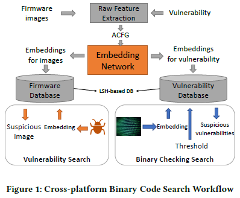
给定二进制函数（从固件映像或已知漏洞），Genius首先以属性控制流程图（ACFG）的形式提取原始特征。在ACFG中，每个顶点都是标记有一组属性的基本块。表1列出了Genius中使用的六个块级属性和两个块间属性。
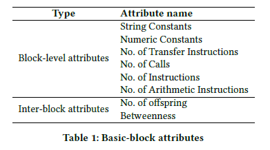
图2说明了OpenSSL中包含Heartbleed漏洞函数的ACFG。然后将每个ACFG转换为高级嵌入，然后使用位置敏感哈希（LSH）将其存储到哈希表中。因此，要标识一组二进制函数是否与查询函数相似，我们只需要找到查询函数的相应嵌入，并在目标语料库中找到相似的嵌入。
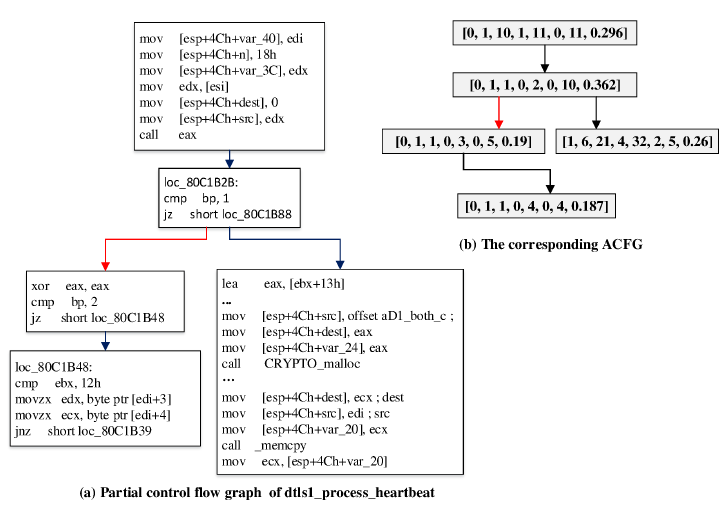
该流程的关键组成部分是如何将ACFG转换为其嵌入。 Genius采用基于密码本的方法来嵌入ACFG。 它使用一种聚类算法来训练一个密码本，该密码本由为每个群集标识的多个代表性ACFG组成。 然后，为了将ACFG转换为特征向量，Genius 使用二部图匹配算法来测量指定ACFG与码本中每个代表性ACFG之间的相似性。 因此，这些相似性度量形成指定ACFG的特征向量。
虽然图形嵌入的想法令人鼓舞和令人信服，但使用密码本和图形匹配存在一些局限。 首先，码本生成是一个非常昂贵的过程，因为必须对训练数据集中的每对控制流图进行图匹配，然后才可以执行图聚类。 结果，所生成的码本的质量受到训练数据集规模的限制。 其次，图形嵌入的运行时间开销随代码簿的大小（即代码簿中控制流程图的数量）线性增加。 因此，码本的大小必须很小，1限制了图编码的保真度。 最后，但并非最不重要的一点是，这种方法的搜索精度最终受到二部图匹配质量的限制[35]。 作为一种近似算法，二部图匹配可能并不总是产生最佳匹配结果。
2.3 基于神经网络的嵌入生成
在本文中，我们建议采用一种基于神经网络的方法来嵌入ACFG，以克服以前基于图匹配的方法的局限性。 我们的方法采用神经网络将ACFG转换为嵌入。 我们将在第3节中讨论细节。这样做时，我们的方法比以前的工作有几个优点：
更好的准确性：
我们基于神经网络的嵌入可以比二部图匹配和Genius显着提高精度，这有两个主要原因。 首先，基于神经网络的图嵌入根本不依赖于二部图匹配。 取而代之的是，它通过迭代传播整个控制流图来评估整个图形表示形式。第二，神经网络中的参数为最大化嵌入目标而自动学习：两个相似的ACFG的嵌入之间的距离应该最小化，而两个异类ACFG的嵌入之间的距离应该最大化。此外，基于神经网络的方法允许在领域专家的额外监督下对模型进行重新训练，以更好地适应新的任务/场景，从而进一步提高准确性。
嵌入效率更高：
Genius中的图形嵌入计算非常慢，因为它必须与代码本中的每个ACFG进行二部图匹配。相比之下，我们的神经网络模型的计算成本较低。此外，神经网络中的所有计算都可以并行化，以利用大规模并行计算硬件（即多核CPU和GPU）。另一个性能提升来自不需要块间属性。为了获得良好的图形匹配结果，Genius提取了块间属性：offspring和betweenness的数量，与块级属性相比，计算代价平均要高8倍。另一方面，我们的神经网络模型只需要基本的块级属性和offspring数量（计算便宜）即可达到高精度。神经网络模型已经将块间关系信息整合到了嵌入中。因此，不需要这些块间属性（例如，betweenness）来实现高精度。
更快的离线训练：为了计算密码本，Genius需要为大量训练ACFG计算距离矩阵，训练ACFG的时间复杂度在训练样本数量上是二次的，在二部图匹配算法的成本上是线性的。 相比之下，神经网络方法只需要训练恒定数量的时期，每个时期的时间复杂度与训练数据的大小呈线性关系。 结果，Genius花费了超过1周的时间来生成密码本，而我们的方法可以在30分钟内训练神经网络模型，这使得使用再次训练的实际应用成为可能。
3 基于神经网络模型的嵌入生成
我们首先在3.1节中介绍代码相似性嵌入问题，然后在3.2节中概述我们的解决方案。 然后，我们解释该方法的两个重要模块，即图嵌入网络和整体架构（第3.3节）以及训练方法（第3.4节）。 在第3.5节中将讨论如何通过预训练来获得与任务无关的模型，以及如何通过重新训练来获得与任务有关的模型。
3.1 代码相似性嵌入的问题
如上所述，该代码相似性度量可以依赖于任务。 对于一个给定的任务，我们假设存在一个确定代码相似性度量的预言π，这是我们想学习的未知信息。 给定两个二进制程序函数f1，f2，π（f1，f2）= 1表示它们相似； 否则，π（f1，f2）= -1表示它们不相似。
在此，预言π特定于每个任务，通常是未知的。 在某些任务中，可以观察到有限数量的⟨f1，f2，π（f1，f2）⟩三重实例。 例如，领域专家可能能够提供有关预言π的一些真实数据。
代码相似性嵌入问题的目的是找到映射ϕ，将函数f的ACFG映射到矢量表示μ。直观地，这样的嵌入应该捕获足够的信息以检测相似函数。也就是说，给定易于计算的相似度函数Sim（·，·）（例如，两个向量的余弦函数），和两个二进制函数f1，f2：如果π（f1，f2）= -1，Sim（ϕ（f1），ϕ（f2））应该是较大值，否则是较小值。
学习嵌入（即，映射ϕ）的一个优点是它能够进行有效的计算。二进制函数之间的相似性可以使用代价较低的两个向量之间的相似性计算来代表，而不会产生代价高的图匹配算法的成本。
如前所述，使用神经网络去预测嵌入函数特别吸引人，因为当提供有限的与任务相关的真实数据时，可以快速地对其进行重新训练以轻松地适应给定任务。而且，计算基于神经网络的嵌入不依赖于任何昂贵的图匹配算法，因此可以有效地实现。
3.2 解决方法概述
在本节中，我们阐述了解决代码相似性嵌入问题的关键思路。在这项工作中，我们假设函数f的二进制代码由其ACFG g表示。在下文中，我们将互换使用术语“ [函数的二进制代码]”和“ ACFG”。
我们将嵌入映射ϕ设计为神经网络。由于输入是ACFG，因此我们将利用机器学习社区中以前的图形嵌入网络来解决该问题[13]。但是，在Dai等人的工作中[13]，图形嵌入网络是针对分类问题而设计的，分类问题需要标签信息来训练模型。相反，我们的 代码相似性嵌入问题不是分类问题。因此，现有方法不能直接应用，我们需要设计一种新颖的方法来训练图嵌入网络来解决相似性检测问题。
为了应对这一挑战，我们提出了一种新的学习方法： 我们将训练ϕ，使之在区分两个输入ACFG之间的相似性方面表现出色，而不是预测任务上表现出色。特别是，我们设计了一个Siamese结构[7]，并将图形嵌入网络Structure2vec [13]嵌入其中。Siamese结构将两个函数作为其输入，并产生相似性得分作为输出。这使得模型可以进行以 g1， g2 作为输入，以及真实标签π（f1，f2）作为输出的有监督学习来进行端到端训练，而无需任何手工启发法方法去考虑嵌入如何被生成。因此，这种方法更健壮，更容易适应不同的任务。我们将在第3.4节中解释有关此总体架构和训练的更多详细信息。
训练Siamese结构需要大量成对的相似函数，以及成对的不相似函数。 但是，在大多数任务中，基本实际数据是有限的。 为了解决此问题，我们采取了一个默认策略，该策略将等效函数（即从相同源代码编译的二进制函数）视为相似，而非等效函数则不相似，因此在给定源代码集合的情况下，我们可以轻松生成大型训练集。 我们可以使用此数据集来预训练与任务无关的模型，该模型对于大多数任务都可以有效。 此外，为了合并针对特定任务少量可用的真实数据，我们的方法允许合并任务特定数据后对模型进行重新训练。 我们将在第3.5节中更详细地说明与任务无关的预训练和针对特定任务的再训练。
3.3 图嵌入网络
我们的图形嵌入网络由Dai等人的Structure2vec[13]改变而来。 将ACFG表示为g=(V ，E)，其中V和E分别是顶点和边的集合； 此外，图中的每个顶点v可以具有其他特征xv，它们对应于ACFG中的基本块特征。 图嵌入网络将首先为每个顶点v∈V计算一个p维特征μv，然后使用这些顶点嵌入的聚合计算g的嵌入向量μg。 即是μg：= Av∈V（μv），其中A是一个聚合函数，即求和或平均值。 在这项工作中，我们选择μg=∑v∈V（μv），并保留了使用其他聚合函数作为未来工作的探索。
在下文中，我们首先解释有关通用图嵌入网络的更多细节，然后介绍专门针对我们的ACFG嵌入问题实例化的变体。
基础的Structure2vec方法： Structure2vec受到图形模型推理算法的启发，其中根据图拓扑g递归聚合顶点的特定特征xv。 经过几步递归后，网络将为每个顶点生成一个新的特征表示（或嵌入），同时考虑图形特征和顶点特征之间的相互作用。 更具体地说，我们将N（v）表示为图g中顶点v的邻居的集合。 然后，Structure2vec网络的一个变体会将每个顶点处的嵌入μv（0）初始化为0，并在每次迭代时将其更新为
在此定点更新公式中，F是一个通用的非线性映射，我们将在以后指定选择。 根据更新公式，可以看到嵌入更新过程是基于图拓扑并以同步方式进行的。 仅在对上一轮的所有顶点进行的嵌入更新完成后，才会开始新一轮遍及各个顶点的嵌入。 显而易见，更新还定义了一个过程，其中顶点特征xv通过非线性传播函数F传播到其他顶点。此外，执行更新的迭代次数越多，顶点特征将传播到的距离越远处的顶点，并在远处的顶点上进行非线性聚合。 最后，如果在T迭代后终止更新过程，则每个嵌入μv（T）的顶点将包含有关其T跳邻域的信息，该信息由图拓扑和所涉及的顶点特征确定。
我们将学习这些参数，而不是在非线性映射F中手动指定参数。 为了训练最初设计用于分类问题的Structure2vec模型，先前的工作要求每个输入图g都具有真实性标签，以指示其属于哪个“类”，然后将该模型与Softmax层链接，以便可以通过最小化交叉熵损失来端对端地训练整个模型，如3.2节所述，该方法不适用于我们的情况，因为我们的问题不是分类问题。
取而代之的是，我们在Siamese结构中端到端的训练F中的参数与其他参数，Siamese结构使用这些嵌入来计算相似性，这在3.4节进行解释。
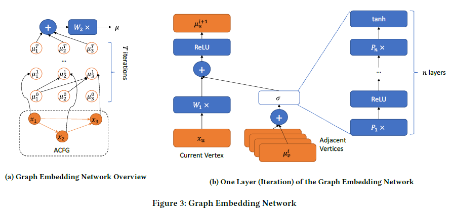
对F的参数化：我们现在讨论使用神经网络对F参数化。图3展示了我们的网络结构。特别地，我们将F设计为具有以下形式：
其中xv是图节点（或基本块）级特征的d维向量，W1是d×p矩阵，p是如上所述的嵌入大小。为了使非线性变换σ（·）更强大，我们将σ自身定义为n层全连接神经网络：
其中Pi（i = 1，…，n）是p×p矩阵。我们将n称为嵌入深度。在此，ReLU是整流线性单位，即，ReLU（x）＝ max {0，x}。我们对更新函数F进行的新颖参数化以及第3.5节中描述的迭代更新方案完善了ACFG的嵌入网络。在算法1中概述了为每个ACFG生成嵌入的总体算法。在该算法中，W2是另一个p×p矩阵，用于转换嵌入向量。我们将其输出表示为ϕ（g）。
3.4 使用Siamese结构学习参数
在本节中，我们阐述了整个网络体系结构的设计，该设计通过训练图嵌入来进行相似性检测。 特别是，我们将Siamese结构与图形嵌入Structure2vec网络结合使用。 Siamese结构使用两个相同的图形嵌入网络，即Structure2vec，它们在顶部连接。 每个图嵌入网络都将一个ACFG gi（i = 1，2）作为其输入，并输出嵌入ϕ（gi）。 Siamese结构的最终输出是两个嵌入的余弦距离。 此外，两个嵌入网络共享相同的参数集。 因此，在训练过程中，两个网络保持相同。 总体架构如图4所示。
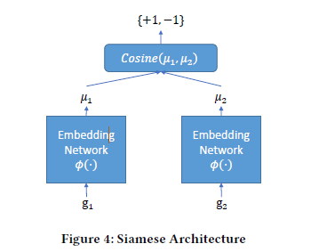
给定K对ACFG集合⟨gi，g’i⟩，具有真实配对信息yi∈{+1，-1}，其中yi = +1表示gi和g’i相似，即π（gi ，g’i）= 1，否则yi = -1。 我们将每对的Siamese网络输出定义为
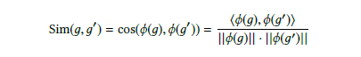
ϕ（g）由算法1产生
然后训练模型参数W1，P1，… 。 。 ，Pn和W2，我们将优化以下目标函数
我们可以使用随机梯度下降来优化目标（3）。 根据图拓扑递归计算参数的梯度。 最后，一旦Siamese网络可以实现良好的性能（例如，使用AUC作为衡量标准），训练过程就会终止，并且训练后的图形嵌入网络可以将输入图转换为适合于相似性检测的有效嵌入。
3.5 独立任务预训练与特殊任务的再训练
训练模型需要关于预言π的大量数据，这可能很难获得。为了解决此问题，我们使用默认策略构造训练数据集。该数据集可用于预训练任务无关模型（对大多数常见任务有效）。当其他特定于任务的数据可用时，我们允许对预训练的模型进行快速重新训练以获取特定于任务的模型。我们在下面解释这两种方法。
与任务无关的预训练：为了预训练适用于大多数常见任务的模型，直观地说，每个函数的生成嵌入应尝试捕获二进制函数在不同系统架构和编译器不变的特征。我们通过这样构建数据集来实现这种直觉：假设收集了一组源代码，我们可以使用不同的编译器和不同的优化选项将它们编译成针对不同体系结构的程序二进制文件。这样做时，默认的预测将认为，如果两个二进制函数是从相同的源代码编译而来的，则是相似的，否则非相似。为了构造训练数据集，对于每个二进制函数g，另一个相似的函数g1和一个不同的函数g2进行采样，以构造两个训练样本(g，g1，+1)和(g，g2，-1)。在我们的评估中（第4.2节），我们证明了使用此训练方法进行预训练的模型比使用基于[18]的相同任务的基于最新图形匹配的方法[18]的性能更好。
特定于任务的再培训：有时，特定任务使用的策略可能会与用于预训练模型的默认策略有所不同。在这种情况下，我们需要一种有效的方法，通过使用领域专家提供的少量附加数据(f，f’，π（f，f’）)来微调图嵌入网络中的学习参数。 重新训练过程通过合入少量由领域专家提供的有关特定任务的附加数据来优化图形嵌入网络。
更具体地说，假设我们从人类专家那里获得了函数对（gi，g’i（的列表以及它们的真实标签π（gi，g’i），我们可以生成其他ACFG对以重新训练图嵌入网络ϕ（g）。特别是，对于提供的列表中的每个ACFG对gi，g’i，我们用配对信息yi =π（gi，g’i）对(gi，g’i)扩充训练集，这是来自人类专家。
使用此扩充的数据集，我们进一步训练了图嵌入网络几个（例如5个）时期。在每个时期中，新添加的对将比旧数据采样的频率更高（例如，采样频率提高50倍）。增强训练完成后，再训练网络φ（·）将被部署用于相似性检测任务。这种再训练过程允许人类专家向系统提供反馈，并且可以对模型进行微调以使其适应于特定于任务的预言π，从而进一步提高了相似性检测的准确性。
4 评估
在本节中，我们将根据Gemini的搜索准确性和计算效率对其进行评估。另外，我们使用包含标签的数据集来评估独立任务的预训练模型的准确性。我们进一步使用真实数据集来研究，我们的模型如何进行重新训练以适应新任务。 在所有评估中，我们的方法都比最先进的方法更具优势[18]。
4.1 实验和装置
我们的系统由两个主要组件组成：ACFG提取器，用于得到图嵌入的神经网络模型。我们从Genius [18]的作者那里获得了ACFG提取器，它是反汇编工具IDA Pro[1]的插件，因此我们可以确保从二进制代码提取的原始特征与Genius提取的原始特征一致。我们在基于Python的TensorFlow [2]中实现了神经网络模型。
我们的实验是在装有两个Intel Xeon E5-2620v4 CPU（总共32个内核），运行于2.1GHz的服务器，96 GB内存，1TB SSD和8个GeForce GTX 1080 GPU卡上进行的。在训练和评估期间，仅使用了1个GPU卡。
基线：以前有一些针对漏洞搜索问题的著作：discovRE [16]，Multi-HM和Multi-k-HM [31]，基于质心的搜索[10]和Genius [18]。冯等人已经证明，Genius方法比其他方法更准确，更有效[18]。因此，在我们的评估中，我们考虑了[18]中评估的两种基线方法。
二部图匹配（BGM）：给定两个二进制函数，我们使用Genius中所述的二部图匹配直接在其ACFG上计算它们的相似性得分。该方法为评估成对图匹配方法的准确性提供了基线。
基于代码本的GraphEmbedding（Genius）：这种方法为图形嵌入提供了基线。我们与Genius [18]的作者联系，并获得了ACFG提取代码和用于评估的代码本。为了比较，我们进一步实现了代码本生成和嵌入生成。
数据集： 在评估中，我们收集了四个数据集：（1）数据集I，用于训练神经网络和评估预训练模型的准确性； （2）用于评估特定任务模型性能的数据集II； （3）效率评估数据集III； （4）案例研究的脆弱性数据集（数据集IV）。
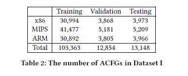
- 数据集I：此数据集用于神经网络训练和基线比较。它由从源代码编译的二进制文件组成，因此我们有真实标签。也就是说，我们认为从相同的源代码函数编译的两个ACFG是相似的，而从不同的函数编译的两个ACFG是不相似的。特别是，我们使用GCC v5.4编译了OpenSSL（版本1.0.1f和1.0.1u）。编译器设置为在x86，MIPS和ARM中以优化级别O0-O3发出代码。我们总共获得18269个二进制文件，其中包含129365个ACFG。我们将数据集I分为三个不相交的功能子集，分别用于训练，验证和测试。统计信息显示在表2中。 在拆分期间，我们保证从同一个源函数编译的两个二进制函数不会在训练，验证和测试集之间分为两个不同的集。在此过程中， 我们可以检查预训练的模型是否可以适应于看不见的函数。
- 数据集II：我们与Genius [18]的作者联系，以获取他们论文[18]中使用的相同的大规模数据集（在他们的论文中称为Dataset III），其中包括33,045个固件镜像。在这些镜像中，有8,128个可以成功解压缩。这些镜像来自26个不同的供应商的不同的产品，例如IP摄像机，路由器，访问站点等。
- 数据集III：为了评估效率，我们使用各种大小的ACFG（即，图中的顶点数）构造了一个数据集）。特别是，我们首先从数据集II中随机选择16个固件镜像。在这16个固件镜像中，有82,100个ACFG，大小从1到1,306。这些ACFG分为几组，以便同一组中的所有ACFG的大小均相同。对于包含20个以上ACFG的任何集合，我们从集合中随机选择20个，并删除所有其他ACFG。最后，我们在该数据集中获得了3,037个ACFG。
- 数据集IV：此数据集包含从[18]中的漏洞数据集获得的漏洞函数。总共包含154个易受攻击的函数。
训练详情： 我们的神经网络模型首先使用数据集I进行如下预训练。我们使用Adam优化算法[27]，并将学习率设置为0.0001。我们将Siamese模型训练了100个时期。在每个时期，我们首先构造用于该时期的训练数据，如下所示：对于训练集中的每个ACFG g，我们从与g相同的源函数编译的所有ACFG的集合中，随机选择一个ACFG g1，并从中选择一个ACFG训练集中所有其他ACFG集中的g2。然后，我们生成两个训练样本：带有标签+1的(g，g1)和带有标签-1的(g，g2)。请注意，由于我们在每个时期分别为每个g随机选择g1和g2，因此训练数据通常在不同时期有所不同。在为每个时期生成训练数据后，在将其随机输入训练过程之前，将其随机打乱。每个小批量包含10对ACFG。在每个时期之后，我们在验证集上测量损失和AUC。在100个训练时期内，我们保存了在验证集上获得最佳AUC的模型。
默认情况下，嵌入大小p为64，嵌入深度n为2。模型运行T = 5次迭代。基本块属性包括块级属性和后代数目，即总共7个属性。
4.2 准确性
在本节中，我们评估了Gemini中预训练模型的准确性。为此，我们如下构建相似性测试数据集：从数据集I中的测试集中，对每个ACFG g，我们从测试数据集中随机选择两个ACFG g1，g2，这标签（g，g1⟩和⟨g，g2⟩分别为+1和-1（即来自同一源函数和不是来自同一源函数）。此相似性测试数据集包含26,265对ACFG。请注意，构造测试集是为了使从同一源代码编译的两个二进制函数不会同时出现在训练集和测试集中。这样，我们就可以检查Gemini在未训练的函数上的性能。图5a说明了我们的神经网络模型（Gemini）的ROC曲线以及两种基线方法。我们可以看到，双子座的表现大大超过BGM和Genius。
为了进一步检查Gemini在具有不同大小的图上的性能，我们将相似度-准确度测试集分为大图子集和小图子集。大图子集仅包含两个ACFG对，两个ACFG都至少具有10个顶点。小图子集包含其余部分。在大图子集和小图子集上评估的不同方法的ROC曲线分别绘制在图5b和图5c中。从这两个数字来看，我们有一致的观察结果：1）Gemini的表现明显优于BGM和Genius。 2）在小图上，Genius的性能优于BGM；在大图上，BGM的性能优于Genius；在大图和小图上，Gemini的性能均优于BGM和Genius。
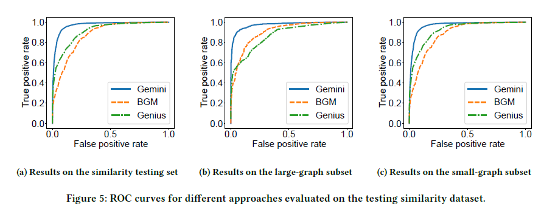
4.3 超参
在本节中，我们评估了Gemini模型中超参数的有效性。特别是，我们研究了训练时期数量，嵌入深度，嵌入大小，ACFG属性和迭代次数的影响。训练时期数量的影响检查是使用相似性验证集。我们使用相似性测试集检查其他超参数。但是，在整个模拟测试集上，AUC值几乎相同。由于我们对模型在大型图上的性能更感兴趣，因此其他超参数的检查使用的是相似性测试集的大型图子集。
训练时期数：我们训练了175个时期的模型，并每5个时期在验证集上评估模型的损失和AUC。结果绘制在图7a和图7b中。从图中可以看出，在经过5个训练周期后，损耗降至较低的值，然后几乎保持不变。模型训练了100个时期后，损失最小。我们对AUC值进行了类似的观察，尽管在模型训练了160个时期后出现了最高的AUC值。因此，我们得出结论，可以快速训练模型以实现合理的良好性能（5个时期后）。
嵌入深度：我们在Gemini模型中改变函数σ中的层数。从图7c中，我们观察到当嵌入深度为2时，ROC曲线具有最大的AUC值。注意，原始的Structure2vec [13]可以看作是将嵌入深度选择为1。我们可以通过将一个非线性映射层增加到σ来观察到明显的改进。但是，添加更多的层并没有太大帮助。
嵌入大小：在图7d中，我们可以看到实现最外面ROC曲线的嵌入大小为512。但是，与嵌入大小对应的所有曲线均不小于64。由于较大的嵌入大小需要更长的训练时间和更长的评估时间，因此将嵌入大小选择为64是在性能和效率之间的良好折衷。值得注意的是，即使我们选择嵌入尺寸为16，Gemini仍然比Genius（嵌入尺寸也为16）和BGM都更有效。
ACFG属性：我们使用三种不同的方法来提取属性以构造ACFG，以评估准确性。特别地，我们认为属性包括（1）仅6个块级属性（Block）； （2）6个块级属性加上后代数量（块+ O）； （3）所有8个属性（块+ O + B）。从图7e中，我们观察到Block + O（总共7个属性）实现了最佳性能。这是出乎意料的，因为使用所有属性（Block + O + B）的模型应该比使用Block + O的模型更具表现力。我们认为这是培训数据的过度拟合场景。也就是说，在计算嵌入时，额外的betweeness属性会误导模型。
迭代次数： 从图7f中，我们可以看到，当迭代次数T为5或更大时，该模型可获得最佳性能。 这是合理的，因为在此数据集中所有图的大小都大于10。它需要5跳才能将一个顶点上的局部信息传播到图的大部分。
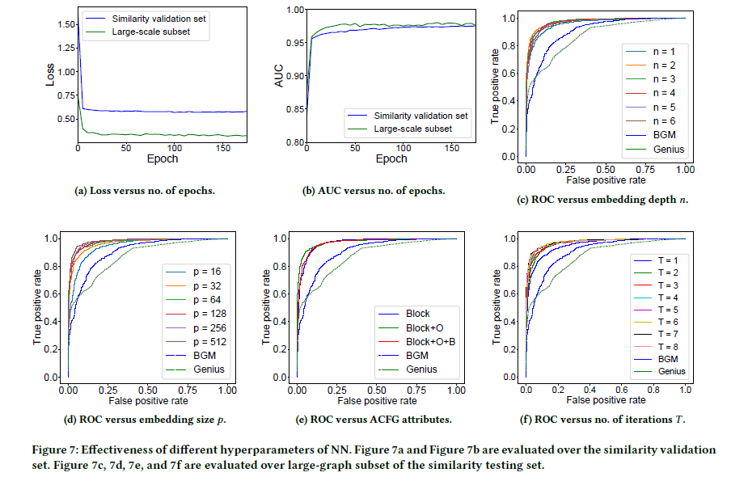
4.4 效率
我们使用数据集III评估Gemini和Genius嵌入生成的效率。特别是，我们测量以下三个任务的等待时间：（1）一种函数的ACFG提取时间； （2）从ACFG到嵌入的生成时间； （3）嵌入生成的总延迟（包括任务1和任务2）。请注意，我们排除了使用IDA pro的反编译时间，因为这两种方法都相同。反编译二进制文件通常需要几秒钟的时间，可以对该二进制文件中的所有函数进行摊销。
对于嵌入生成，我们分别为Gemini和Genius实现了多个版本。我们在Tensorflow中实现了Gemini的CPU和GPU版本。这样，我们可以最大程度地利用多核硬件来提高性能。对于Genius，我们实现了单线程版本和多线程版本。由于Genius使用二部图匹配将ACFG的嵌入计算为该ACFG与码本中每个图之间的相似性得分，因此可以自然地并行化它，以便每个线程处理码本中的一个图。多线程版本将这些计算并行化。
ACFG提取时间：图6a（每个样品一个点）和图6b（不同ACFG大小的平均提取时间）说明了结果。我们可以观察到，仅提取6个基本块属性以及提取6个基本块属性以及子代数属性需要相似的时间，但是如果我们另外提取介于中间属性，则平均要花费8倍的时间。从图6b中，我们可以看到提取时间通常随ACFG大小的增加而增加，但变化很大。请注意，Genius需要所有8个属性才能实现其最佳性能。相比之下，Gemini可以通过嵌入更新的迭代来聚合图结构信息，从而可以实现最佳性能，而无需进行昂贵的块间属性计算。因此，Gemini在ACFG提取方面可以比Genius平均提高8倍。
嵌入生成时间：嵌入生成时间如图6c和图6d所示。我们可以观察到，Gemini的CPU实现比Genius的多线程版本快2400倍至16000倍。平均而言，加速可以高达7000倍。我们将此归因于几个原因。首先，Gemini方法避免了昂贵的图形匹配算法，并将时间复杂度降低到图形中边的数量。由于ACFG是稀疏图形，即每个顶点的出度最多为2，因此计算成本几乎与图形大小成线性关系。其次，Gemini方法中的大多数计算都可以实现为矩阵运算：矩阵乘法，矩阵求和以及矩阵上的逐元素运算。所有这些操作都可以并行化，以利用底层的多核CPU来实现内核数量方面的加速。另一方面，Genius中的图匹配算法不容易并行化。唯一的加速来自并行处理码本中的每个元素，因此这种加速受码本中元素数量的限制。稍后，我们的分析将表明，在Genius中很难达到理论上的加速上限，即码本大小。
现在我们比较Genius的单线程版本和多线程版本，并表明很难达到加速的理论上限，即码本大小。尽管多线程版本的运行速度可以提高10倍，但平均速度仅为35％。一个原因是，当Genius中使用的密码本包含一个具有超过500个顶点的大图形时，当处理的ACFG较小时，处理此元素的时间将占总特征生成时间的主导。此外，多线程同步引入了额外的开销。图6c和图6d支持此观察结果：（1）当ACFG较小时，多线程版本与单线程版本相似，甚至更慢； （2）当ACFG变大时，多线程的速度也会提高。
我们进一步检查了Gemini在GPU上的性能。但是，我们发现GPU版本平均比CPU版本慢10％。这主要发生在小图的嵌入生成上。在较大的图表上，GPU版本的运行速度比CPU版本快70％。我们将此观察结果归因于以下事实：GPU版本需要额外的开销，即在计算之前分配GPU内存并将数据从主内存复制到GPU内存。因此，随着ACFG的增大，与计算嵌入的总时间相比，此开销微不足道。
嵌入生成的总体延迟： Genius的嵌入生成时间包括块级和块间函数（即图6a中的Block + O + B）的ACFG提取时间，以及函数嵌入生成的多线程CPU实现（即Genius（M ），如图6c）所示。对于Gemini，嵌入生成时间包括用于块级功能的ACFG提取时间和后代的数量（即，图6a中的Block + O）以及图形嵌入的CPU实现（即，图6c中的Gemini（CPU）） ）。我们观察到双子座可以实现27.7倍至11625.5倍的加速比。平均而言，Gemini的运行速度比Genius快386.4倍。
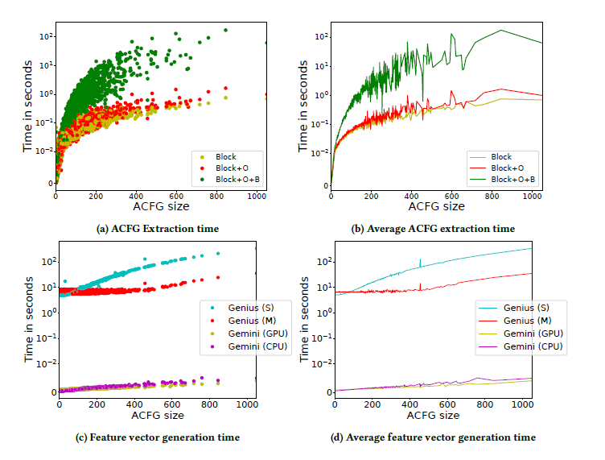
图6：对数据集III的效率评估。 图6a和图6c绘制了数据集III中每个样本的一个点。 在图6b和图6d中，我们平均所有具有相同ACFG大小的数据点的运行时间。 因此，在这两张图中，每个ACFG大小都有一个数据点。 在图6a和图6b中，“块”表示6个块级属性的提取时间； “ + O”表示提取还包括子代数属性； “ + B”表示提取还包括中间属性。 在图6c和图6d中，Gemini（CPU）和Gemini（GPU）分别表示Gemini方法的CPU和GPU实现。 Genius（S）和Genius（M）分别表示Genius的单线程和多线程实现。
4.5 训练时间
尽管离线训练时间被大量的在线查询来摊销，但新固件镜像的发布可能需要以每月为基础甚至每周一次为基础更新学习模型，以更准确地对数据建模。因此，我们简要比较Genius和Gemini的训练时间。
Genius方法需要使用一种称为频谱聚类的无监督学习算法来计算密码本。该算法需要构造一个距离矩阵，该距离矩阵生成的时间复杂度代价是训练数据大小的二次方。结果，当训练数据包含100,000个函数（在我们先前的实验中用于构建密码本）时，Genius花费了一个多星期的时间来构建密码本。
相比之下，由于Gemini模型仅运行固定数量的时期，因此其运行时间与时期数量成线性关系，并且与每个时期（即训练数据集）中的样本数量呈线性关系。在我们的实验中，每个时期包含大约206,000个训练样本，并且运行时间不到5分钟。先前我们已经证明了Gemini模型仅需要训练5个时期即可达到合理的性能，而运行100个历元可提供最佳性能。这意味着，Gemini需要不到30分钟（5个时期）的时间来训练模型，使其性能超过Genius，而达到最佳性能则需要不到10小时。因此，我们基于神经网络的方法比Genius允许更频繁地更新模型。该属性对于使重新训练和模型更新切实可行至关重要。
4.6 理解嵌入
我们将使用任务独立的预训练嵌入网络使嵌入计算可视化，以了解其有效性。特别是，我们随机选择5个函数源代码，并使用不同的编译器，不同的目标体系结构和不同的优化级别来计算相应二进制函数的嵌入。然后，我们使用t-SNE [46]将高维嵌入投影到二维平面上。我们在图8中绘制投影点，不同的源函数以不同的颜色表示。我们可以观察到：（1）从同一源函数编译的二进制函数彼此接近； （2）从不同的源函数编译的二进制函数彼此相距甚远。因此，该可视化说明我们独立于任务的预训练嵌入功能可以在嵌入中保留源函数的信息，而与目标体系结构，使用的编译器和优化级别无关。
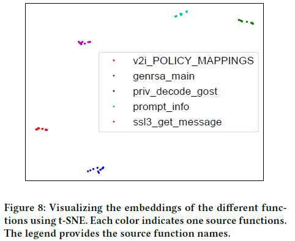
4.7 使用真实数据集对特定任务再训练的准确度
在本节中，我们使用实际的固件镜像评估特定于任务的再培训方法的有效性。评估的配置方法与[18]相同。我们在数据集II中提取了函数的ACFG，总共得到420,558,702个函数。我们从数据集IV中进一步选择了两个漏洞，与[18]中使用的漏洞相同。对于每个漏洞，我们认为在包含相同漏洞的数据集I中搜索尽可能多的函数是一项特定的任务。为了实现这一目标，我们从数据集I上进行预训练的模型中重新训练模型。
为了与[18]（仅检查前50个最相似的结果）进行比较，我们还评估了前50个函数之间的精度。结果展示，通过重新培训，Gemini可以在前50个结果中为每个任务实现80％以上的准确度，这明显优于其精度在20％到50％左右的现有技术[18]。我们在下面介绍细节。总体而言，我们的方法允许从前50个结果中的Genius中平均识别出25个以上新的易受攻击的固件镜像。
再训练效果：我们以迭代方式进行再培训。首先，我们有一个预先训练的模型，并使用它来计算目标语料库中所有函数的嵌入，以建立索引。在这种情况下，每个查询可以在3秒内处理完毕。我们手动检查前K个（例如K = 50）结果，并为每个结果分配真实标签，以便将前K个结果用于再训练。重新训练的每次迭代之后，我们重新计算从整个目标语料库中随机采样的子集（例如10％）的嵌入，以获得新的top-K结果列表。我们重复此过程几次迭代。在实践中，我们的实验表明，我们只需要很少的重复训练。请注意，Genius方法不能灵活地有效地合并此类额外监督。因此，再培训过程是我们方法相对于Genius的独特优势，并允许我们的方法在领域专家的额外监督下达到更高的准确性。
特别是，由于Genius [18]提供了参考结果，因此我们使用与Genius中相同的两个漏洞，即CVE-2015-1791和CVE-2014-3508。对于CVE-2015-1791，我们发现仅进行了1次迭代再培训，我们的方法就从前50个结果中找到了来自四个供应商（例如D-Link，ZyXEL，DD-wrt和Shibby by Shibby）的42个存在镜像的漏洞。此外，在前100个结果中，我们的方法发现了85个真实肯定。这些结果表明，一次重新训练迭代有助于将精度提高到84％以上。作为参考，Genius仅能检测到14个易受攻击的固件镜像（精度为28％），并且仅来自D-Link和Belkin。
CVE-2014-3508较难，因为控制流程图在补丁之前或之后不会更改，而是仅再插入一条指令（即将零值存储到内存缓冲区中）作为补丁。使用我们的方法，经过3次重复训练，我们的方法在前50个结果中发现了41个固件镜像，这些镜像是易受攻击的，其精度为82％。相比之下，Genius只能识别前50个结果中的24个易受攻击的固件镜像（精度为48％）。
再培训时间：就时间消耗而言，对于每次迭代，我们将模型重新训练5个时间段，并采样整个数据集的10％进行评估（如前所述）。注意，在第二步中，不需要重新生成ACFG，因此我们只需要消耗嵌入计算的成本。对于每次迭代，这两个自动化步骤的总时间可以在2小时内完成。在人工调查时间方面，我们发现经验丰富的专家可以在2小时内完成50名候选函数的人工打标签。对于以后的迭代，此时间甚至可以更短，因为在进行第一次迭代之后，专家们已经很熟悉易受攻击的代码。总体而言，人类专家花了不到12个小时的时间进行了3次迭代，以针对给定的漏洞训练有效的模型。将模型部署到整个数据集后，大约需要12个小时才能为整个数据集生成嵌入。因此，我们得出结论， 我们方法的再训练能力使人类专家的反馈得以实际使用，从而在合理的时间内（即一天之内）提高了搜索准确性。
5 相关工作
在整篇文章中，我们已经讨论了密切相关的工作。在本节中，我们简要地调研了其他相关工作。我们将重点放在使用代码相似性来搜索没有源代码的已知bug的方法。查找未知bug的其他方法[3、8、9、34、42–44]将不在本节中讨论。对于基于机器学习的bug搜索[18]，我们已经在本文前面讨论了比较。
基于原始功能的错误搜索：许多研究人员已经致力于解决二进制文件中的bug搜索问题，并为该方向做出了巨大贡献。从根本上说，它们依赖于直接从二进制文件中提取的各种原始特征来进行代码相似性匹配。 N-gram或N-perms [26]是bug搜索的两种早期方法。他们采用二进制序列或助记符代码匹配，而不了解代码的语义[25]，因此他们不能兼容由不同编译引起的操作码重新排序问题。为了进一步提高准确性，基于跟踪的方法[14]将执行序列捕获为代码相似性检查的函数，可以解决操作码更改问题。 TEDEM [32]使用表达式树为每个基本块捕获语义。但是，操作码和寄存器名称在整个体系结构中是不同的，因此这两种方法不适合在跨体系结构中查找bug。
许多其他方法可用于跨体系结构设置中的bug搜索，但是将其用于大规模固件bug搜索则很昂贵。 Zynamics BinDiff [15]和BinSlayer [6]采用昂贵的图同构算法来量化控制流图之间的相似度以进行代码搜索。 BinHunt [20]和iBin-Hunt [29]中使用的符号执行和定理证明者设计昂贵，因为它们需要提取方程式并进行等效检查。
虽然皮尼等[31]使用MinHash来减少代码相似度的计算，他们的图匹配算法仍然太昂贵，无法处理数百万个图对。 DiscovRE [16]利用预过滤通过消除不必要的匹配对来增强基于CFG的匹配过程，但是预过滤不可靠，并且会输出大量的假阴性[18]。许多其他方法，例如Costin等。文献[11]在大规模搜索bug时确实有效，但它们仅针对具有明显伪像的特定bug而设计，无法处理更一般的情况。
图形嵌入：图分析在各种实际应用中具有重要意义，例如生物学[13]和社交网络[19]。通常，图嵌入在图分析中使用有两种不同的意图：第一个是嵌入图的节点，这意味着找到从节点到向量空间的映射，以便保留图的结构信息[21]。在早期方法中，LLE [36]找到了嵌入向量，因此节点的嵌入是其附近节点的线性组合。在[4]中，当两个节点之间的边缘权重较大时，两个节点的嵌入彼此接近。最近，基于深度学习的方法被用于处理大规模图形数据集。
本文采用的图嵌入的另一种意图：找到一个代表整个图的嵌入向量。之后，人们可以在其上执行机器学习方法来处理诸如蛋白质设计和基因分析之类的任务[39]。当前，内核方法[38]被广泛用于处理结构数据，如序列[17]和图形[5]。
内核方法的关键是精心设计的内核函数（节点对之间的正半定函数）。通过计算图中显示的基本结构来设计一类内核。例如，[33]计算图中的特定子树模式； [41]计算具有特定大小的子图的外观；在[40]中，在称为Weisfeiler-Lehman算法的过程中将计算不同的结构。但是，在这些方法中，内核在学习之前是固定的，因此嵌入空间的尺寸可能非常大。
另一类内核利用了以下事实：图形模型可以考虑带有噪声和变化的结构化数据。两个代表性的例子是Fisher核[23]和概率乘积核[24]。这些内核适合输入图的图形模型，并在分布之间使用某种形式的内部积作为内核函数。我们在论文中使用的模型Structure2vec [13]，也为输入图构造了图形模型，并通过神经网络对图形模型的推论算法进行参数化，以定义相应内核函数的特征。
基于深度学习的图嵌入方法： Scarselli等人提出了第一个图神经网络来计算图的嵌入[37]。 Li等。使用门控循环单元（GRU）扩展[37]来生成特征。戴等人使用原则性的图形模型思维来概括这两项工作，从而可以定义更灵活的嵌入功能[13]。
因此，我们使用[13]的变体作为嵌入生成函数。从大型网络（例如社交网络）生成图形嵌入还有另一项研究[22、30、45、47]。这些工作着重于无监督学习或半监督学习以及生成图中不同节点的特征，而不是整个图的嵌入。使用这些方法，将其他训练数据合并到再训练中也不容易，这是它们不适合我们的原因。
6 结论
在本文中，我们提出了一种基于深度神经网络的方法来生成二进制函数的嵌入。 我们实现了一个名为Gemini的原型。 我们的广泛评估表明，在相似度检测准确度，嵌入生成时间和总体训练时间方面，Gemini比最新技术要优秀得多。 我们在现实世界中的案例研究表明，与最新技术（即Genius）相比，使用再培训Gemini可以识别出更多的脆弱性固件镜像。
答谢
我们感谢匿名评论者的有用评论。 感谢Chenxinyun对本文撰写的帮助。 该材料部分基于美国国家科学基金会在TWC-1409915、1664315、1719175，IIS-1350983，IIS-1639792和SaTC-1704701，ONR在N00014-15-1-2340，DARPA下的授权下支持的工作 适用于FA8750-15-2-0104和FA8750-16-C-0044，伯克利Deep Drive，NVIDIA，Intel和Amazon AWS。 本材料中表达的任何观点，发现，结论或建议均为作者的观点，不一定反映美国国家科学基金会的观点。
参考
[1] 2015. The IDA Pro Disassembler and Debugger. http://www.datarescue.com/
idabase/. (2015).
[2] Martín Abadi, Paul Barham, Jianmin Chen, Zhifeng Chen, Andy Davis, Jeffrey Dean, Matthieu Devin, Sanjay Ghemawat, Geoffrey Irving, Michael Isard, et al. TensorFlow: A system for large-scale machine learning.
[3] Thanassis Avgerinos, Sang Kil Cha, Alexandre Rebert, Edward J Schwartz, Maverick Woo, and David Brumley. 2014. Automatic exploit generation. Commun. ACM 57, 2 (2014), 74–84.
[4] Mikhail Belkin and Partha Niyogi. 2002. Laplacian eigenmaps and spectral
techniques for embedding and clustering. In Advances in neural information
processing systems. 585–591.
[5] Karsten Michael Borgwardt. 2007. Graph kernels. Ph.D. Dissertation. lmu.
[6] Martial Bourquin, Andy King, and Edward Robbins. 2013. BinSlayer: accurate comparison of binary executables. In Proceedings of the 2nd ACM SIGPLAN Program Protection and Reverse Engineering Workshop.
[7] Jane Bromley, Isabelle Guyon, Yann LeCun, Eduard Sickinger, and Roopak Shah.
1993.Signature Verification Using A “Siamese” Time Delay Neural Network. In NIPS.
[8] Sang Kil Cha, Maverick Woo, and David Brumley. 2015. Program-adaptive mutational fuzzing. In Oakland.
[9] Daming D. Chen, Manuel Egele, Maverick Woo, and David Brumley. 2016. Towards Automated Dynamic Analysis for Linux-based Embedded Firmware. In NDSS.
[10] Kai Chen, PengWang, Yeonjoon Lee, XiaoFengWang, Nan Zhang, Heqing Huang, Wei Zou, and Peng Liu. 2015. Finding Unknown Malice in 10 Seconds: Mass Vetting for New Threats at the Google-Play Scale. In USENIX Security.
[11] Andrei Costin, Jonas Zaddach, Aurélien Francillon, and Davide Balzarotti. 2014. A large-scale analysis of the security of embedded firmwares. In USENIX Security.
[12] Ang Cui, Michael Costello, and Salvatore J Stolfo. 2013. When Firmware Modifications Attack: A Case Study of Embedded Exploitation.. In NDSS.
[13] Hanjun Dai, Bo Dai, and Le Song. 2016. Discriminative Embeddings of Latent
Variable Models for Structured Data. In International Conference on Machine Learning.
[14] Yaniv David and Eran Yahav. 2014. Tracelet-based code search in executables.
In Proceedings of the 35th ACM SIGPLAN Conference on Programming Language Design and Implementation.
[15] Thomas Dullien and Rolf Rolles. 2005. Graph-based comparison of executable objects (English version). SSTIC 5 (2005), 1–3.
[16] Sebastian Eschweiler, Khaled Yakdan, and Elmar Gerhards-Padilla. 2016. discovRE: Efficient Cross-Architecture Identification of Bugs in Binary Code. In
Symposium on Network and Distributed System Security (NDSS).
[17] Eleazar Eskin, Jason Weston, William S Noble, and Christina S Leslie. 2003.
Mismatch string kernels for SVM protein classification. In Advances in neural information processing systems. 1441–1448.
[18] Qian Feng, Rundong Zhou, Chengcheng Xu, Yao Cheng, Brian Testa, and Heng
Yin. 2016. Scalable Graph-based Bug Search for Firmware Images. In ACM Conference on Computer and Communications Security (CCS’16).
[19] Linton C Freeman. 2000. Visualizing social networks. Journal of social structure 1, 1 (2000), 4.
[20] Debin Gao, Michael K Reiter, and Dawn Song. 2008. Binhunt: Automatically finding semantic differences in binary programs. In Information and Communications Security.
[21] Palash Goyal and Emilio Ferrara. 2017. Graph Embedding Techniques, Applications, and Performance: A Survey. arXiv preprint arXiv:1705.02801 (2017).
[22] Aditya Grover and Jure Leskovec. 2016. node2vec: Scalable feature learning for networks. In Proceedings of the 22nd ACM SIGKDD international conference on
Knowledge discovery and data mining. ACM, 855–864.
[23] Tommi S Jaakkola, Mark Diekhans, and David Haussler. 1999. Using the Fisher
kernel method to detect remote protein homologies.. In ISMB, Vol. 99. 149–158.
[24] Tony Jebara, Risi Kondor, and Andrew Howard. 2004. Probability product kernels. Journal of Machine Learning Research 5, Jul (2004), 819–844.
[25] Md Enamul Karim, Andrew Walenstein, Arun Lakhotia, and Laxmi Parida. 2005.
Malware phylogeny generation using permutations of code. Journal in Computer
Virology 1, 1-2 (2005), 13–23.
[26] Wei Ming Khoo, Alan Mycroft, and Ross Anderson. 2013. Rendezvous: A search
engine for binary code. In Proceedings of the 10th Working Conference on Mining
Software Repositories.
[27] Diederik Kingma and Jimmy Ba. 2014. Adam: A method for stochastic optimization. arXiv preprint arXiv:1412.6980 (2014).
[28] Yann LeCun, Yoshua Bengio, and Geoffrey Hinton. 2015. Deep learning. Nature
521, 7553 (2015), 436–444.
[29] Jiang Ming, Meng Pan, and Debin Gao. 2012. iBinHunt: binary hunting with
inter-procedural control flow. In Information Security and Cryptology. Springer,
92–109.
[30] Bryan Perozzi, Rami Al-Rfou, and Steven Skiena. 2014. Deepwalk: Online learning of social representations. In Proceedings of the 20th ACM SIGKDD international conference on Knowledge discovery and data mining. ACM, 701–710.
[31] Jannik Pewny, Behrad Garmany, Robert Gawlik, Christian Rossow, and Thorsten
Holz. 2015. Cross-Architecture Bug Search in Binary Executables. In 2015 IEEE
Symposium on Security and Privacy (Oakland’15). IEEE.
[32] Jannik Pewny, Felix Schuster, Lukas Bernhard, Thorsten Holz, and Christian
Rossow. 2014. Leveraging semantic signatures for bug search in binary programs.
In ACSAC.
[33] Jan Ramon and Thomas Gärtner. 2003. Expressivity versus efficiency of graph kernels. In Proceedings of the first international workshop on mining graphs, trees and sequences. 65–74.
[34] Alexandre Rebert, Sang Kil Cha, Thanassis Avgerinos, Jonathan Foote, David
Warren, Gustavo Grieco, and David Brumley. 2014. Optimizing Seed Selection
for Fuzzing. In USENIX Security.
[35] Kaspar Riesen and Horst Bunke. 2009. Approximate graph edit distance computation by means of bipartite graph matching. Image and vision computing 27, 7 (2009), 950–959.
[36] Sam T Roweis and Lawrence K Saul. 2000. Nonlinear dimensionality reduction
by locally linear embedding. science 290, 5500 (2000), 2323–2326.
[37] Franco Scarselli, Marco Gori, Ah Chung Tsoi, Markus Hagenbuchner, and
Gabriele Monfardini. 2009. The graph neural network model. IEEE Transactions
on Neural Networks 20, 1 (2009), 61–80.
[38] Bernhard Schölkopf and Alexander J Smola. 2002. Learning with kernels. 2002.
(2002).
[39] Bernhard Schölkopf, Koji Tsuda, and Jean-Philippe Vert. 2004. Kernel methods in computational biology. MIT press.
[40] Nino Shervashidze, Pascal Schweitzer, Erik Jan van Leeuwen, Kurt Mehlhorn,
and Karsten M Borgwardt. 2011. Weisfeiler-lehman graph kernels. Journal of
Machine Learning Research 12, Sep (2011), 2539–2561.
[41] Nino Shervashidze, SVN Vishwanathan, Tobias Petri, Kurt Mehlhorn, and Karsten Borgwardt. 2009. Efficient graphlet kernels for large graph comparison. In Artificial Intelligence and Statistics. 488–495.
[42] Eui Chul Richard Shin, Dawn Song, and Reza Moazzezi. 2015. Recognizing
Functions in Binaries with Neural Networks.. In USENIX Security. 611–626.
[43] Yan Shoshitaishvili, Ruoyu Wang, Christophe Hauser, Christopher Kruegel, and Giovanni Vigna. 2015. Firmalice-Automatic Detection of Authentication Bypass Vulnerabilities in Binary Firmware.. In NDSS.
[44] Nick Stephens, John Grosen, Christopher Salls, Andrew Dutcher, and Ruoyu
Wang. 2016. Driller: Augmenting Fuzzing Through Selective Symbolic Execution.
In NDSS.
[45] Jian Tang, Meng Qu, Mingzhe Wang, Ming Zhang, Jun Yan, and Qiaozhu Mei.
2015.Line: Large-scale information network embedding. In Proceedings of the
24th International Conference on World Wide Web. InternationalWorld WideWeb Conferences Steering Committee, 1067–1077.
[46] Laurens Van Der Maaten. 2014. Accelerating t-SNE using tree-based algorithms. Journal of machine learning research 15, 1 (2014), 3221–3245.
[47] Zhilin Yang, WilliamWCohen, and Ruslan Salakhutdinov. 2016. Revisiting semisupervised learning with graph embeddings. arXiv preprint arXiv:1603.08861 (2016).
作者声明
本文版权归作者（rohex）所有，旨在技术交流使用。未经作者同意禁止转载，转载后需在文章页面明显位置给出原文连接，否则相关责任自行承担。
This is copyright.